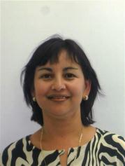

Gricelda
Medina Veloz
20/06/2018
Aguascalientes Ags.

Mi nombre es Gricelda Medina Veloz, soy profesor de tiempo completo en una Universidad Tecnológica, estudié la carrera de Lic. en informática y una maestría en Ingeniería de Software. He impartido materias de Programación en lenguaje Java, estructuras de datos, bases de datos, ingeniería de software e introducción al desarrollo Web. Estuve trabajando 5 años en la empresa privada como analista y asesor de sistemas, y en el área educativa he estado trabajando por 10 años.